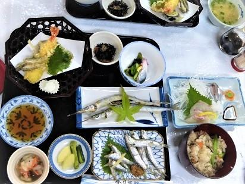

神楽祭（夏越神事） <香川県・伊吹島>
全国有数の「いりこ」の島：伊吹島
伊吹島は観音寺港から西約10kmの燧灘（ひうちなだ）のほぼ中央に位置する、香川県最西端の島です。周囲約６km、面積約１㎢の小さな島の表玄関口「真浦港」へ近づくにつれ、「伊吹いりこ」の加工場（イリバ）が海岸沿いに見えてきます。6～9月に最盛期を迎える島の基幹産業「イリコ漁と加工」は、「島の宝１００景（国土交通省）」にも選ばれています。
神楽祭
旧暦6月1日に行われる神楽祭は、伊吹島で江戸時代より続く伝統行事です。昼神楽は伊吹島八幡神社、夜神楽は荒神社前で行われます。伊吹島のお神楽の特徴といえば、近世以降、香川県の四国本土から、神職が島に渡って演じることです。民間で伝承されることも多い神楽ですが、伊吹島では島民が神楽を演じることはないそうです。夜神楽ではトリ（夜神楽）終了時の松明投げの行事、戻し神楽など伊吹島の神楽ならではの特色を楽しめます。
夏越の祓
神楽と同じ日に夏越の祓を行うのも伊吹島の神楽の特色です。自分の穢れ（けがれ）を移して、神社に納めて自分の代わりに祓い清めてもらう「人型（ひとがた）」や、茅（ち、かや）で作った大きな輪をくぐって穢れを落とす茅の輪くぐりに参加して、今年後半の健康と厄除けを願います。
実は神楽祭は、島の人たちが有志でお金を集めて毎年開催しているそうです。伊吹島で舞うために受け継がれてきた演目もあり、島の方にとって大切な行事で、毎年の楽しみでもあります。
お神楽以外にも、恵比寿信仰を感じられる「港まつり（明神祭）」や、神輿を船に乗せて島を廻る「船渡御（ふなとぎょ）」などたくさんの伝統行事が今なお受け継がれています。
伊吹いりこ
最後に特産品である「伊吹いりこ」をご紹介します。うどん県（香川県）の「うどんのダシ」の味、伊吹いりこは品質が良く、全国に出荷されています。伊吹島周辺は潮の流れが緩やかで、身や骨が柔らかいため、ダシの出が良いイリコが獲れるそうです。漁場と加工場が近く、漁から加工まで一貫した設備をもった体制で生産される鮮度の良い「上質ないりこ」は、ダシ以外にもオイルサーディン、天ぷらやかき揚げ、炙って熱燗に入れるイリコ酒など、様々な調理法で楽しめます。地元で100年続く「春日旅館」さんでの昼食もオススメですよ。
